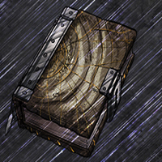

Port-Real fut bâtie à l'endroit même ou Aegon le Conquérant débarqua de Peyredragon, sur l'embouchure de la Néra, où il n'y avait auparavant que des forêts. C'est là que siège le roi sur le trône de Fer. Trois collines en définissent l'extension originelle (celles d'Aegon, Rhaenys et Visenya), l'ensemble étant ceinturé d'un puissant rempart et d'un ensemble de portes.